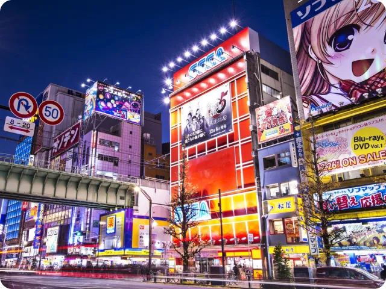
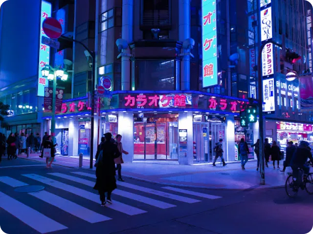

La mégapole de Tokyo a inspiré de nombreux univers cyberpunk comme dans le jeu du même nom dans lequel elle figure par ailleurs, en plus d’en représenter d’autres.
En effet, le pays est reconnu pour son progrès technologique dynamique croissant.
Il est un exemple de modernité et plaît notamment à des générations d’adolescents et de jeunes adultes en touchant en particulier les domaines du jeu vidéo, des films d’animation et des mangas.
Son influence est indéniable : le Japon est l’un des pays les plus appréciés dans le monde. En effet, en 2022, il est considéré comme le pays le plus avancé technologiquement d’après le site egscholars.com.

Sur un plan touristique, Tokyo est appréciée pour ses grandes allées commerciales éclairées de néons publicitaires et ses gratte-ciel mêlés à la célèbre architecture japonaise traditionnelle.
Étant la scène de nombreux évènements liés à la culture geek, la capitale est également un lieu fortement commercial avec de nombreux magasins dédiés aux mangas, à l’animation japonaise et aux jeux vidéo.
L’appréciation mondiale du Japon et de Tokyo a soulevé la question de l’appropriation culturelle tant celle-ci a été reproduite : mangas européens et américains, imitation asiatique, cosplays, conventions comme la Japan Expo (lien) a Paris.
Le genre Cyberpunk puise son inspiration dans Tokyo, mais il s’y développe également. D’une part, il reprend l’esthétique des gratte-ciel et des néons publicitaires de la capitale et de la mode japonaise ainsi que son avancée technologique, d’une autre il est beaucoup représenté dans tout le Japon.
